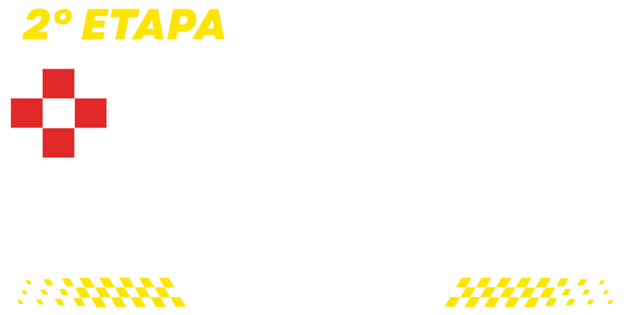

PrevisãoFEVEREIRO 2027Data a definir
Nova data em breve

A 2ª etapa foi adiada para fevereiro de 2027. A nova data será divulgada em breve.
StatusEVENTO ADIADONova data em breve
CidadeSETE LAGOASMinas Gerais
Circuito Sete Lagoas
O SEU PRÓXIMO DESAFIO ESTÁ CHEGANDO.
A 2ª etapa foi adiada para fevereiro de 2027. Estamos preparando todos os detalhes para receber corredores, caminhantes e famílias em uma experiência feita para todos os ritmos.
Assim que a nova data estiver definida, vamos divulgar todas as informações por aqui.
Escolha sua prova
UMA ETAPA. QUATRO JEITOS DE PARTICIPAR.
11,280 KM
Corrida
5,740 KM
Corrida
2 KM
Caminhada da família
KIDS
200 m e 300 m · nascidos de 2011 a 2020
Para os pequenos atletas
CORRIDA KIDS
Uma experiência para se divertir, se movimentar e cruzar a linha de chegada em grande estilo.
R$ 45Inscrição prevista
200 m
300 mDistâncias
300 mDistâncias
A Corrida Kids tem caráter exclusivamente participativo. Todas as crianças que concluírem o percurso recebem medalha de participação.
Inscrições e demais informações serão divulgadas com a nova data.Atualização importante
NOVA DATA EM BREVE
A 2ª etapa foi adiada para fevereiro de 2027.
A data exata, o horário, o local e a programação completa serão divulgados posteriormente.
Fique de olho nas nossas redes sociais e neste site para acompanhar todas as atualizações.
Premiação
MEDALHA PARA QUEM VAI ATÉ O FIM.
Todos os participantes que concluírem corretamente suas provas recebem medalha de participação.
Nas corridas de 11,280 km e 5,740 km, os três primeiros colocados geral feminino e masculino recebem troféu. Também há premiação do 1º ao 3º lugar por faixa etária, no feminino e masculino.
Faixas etárias: 18–25, 25–35, 35–45 e 45–55 anos. A caminhada e a corrida kids têm caráter participativo.Informações importantes
VAMOS NOS VER EM BREVE.
NOVA DATA
A prova está prevista para fevereiro de 2027. A data exata será divulgada posteriormente.
INSCRIÇÕES
As informações sobre inscrições, lotes e valores serão atualizadas com a nova data.
LOCAL DA PROVA
Os detalhes de local e estrutura serão confirmados e divulgados em breve.